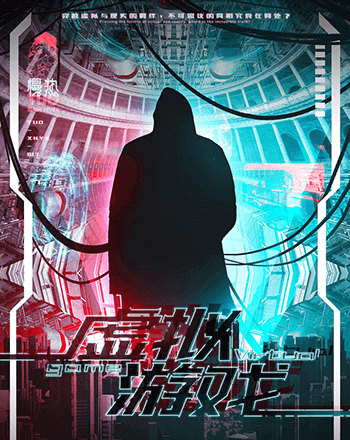
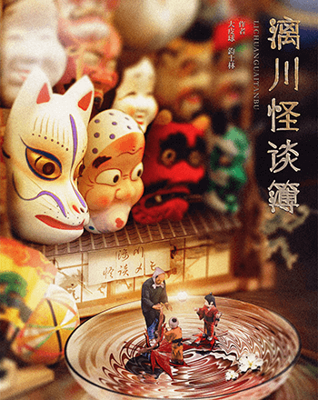

劇本主題類別
- 全部
- 歡樂
- 情感
- 陣營
- 恐怖
- 硬核
-

奉天1928
情感/普通/5人
-
年輪
硬核/進階/5人
-
來電
歡樂/新手/6人
-
捨離
情感/普通/6人
-

新屋
恐怖/普通/6人
-

虛擬遊戲
硬核/進階/6人
-

古木吟
情感/普通/6人
-
市井狂人
歡樂/新手/7人
-
青樓
陣營/普通/7人
-

漓川怪談簿
硬核/進階/7人
-
紙妻
恐怖/進階/7人
-

津門遺雲
陣營/新手/7人
-
第二十二條校規
恐怖/普通/7人
-

龍宴
陣營/普通/8人
-
吾皇在上
歡樂/新手/9人